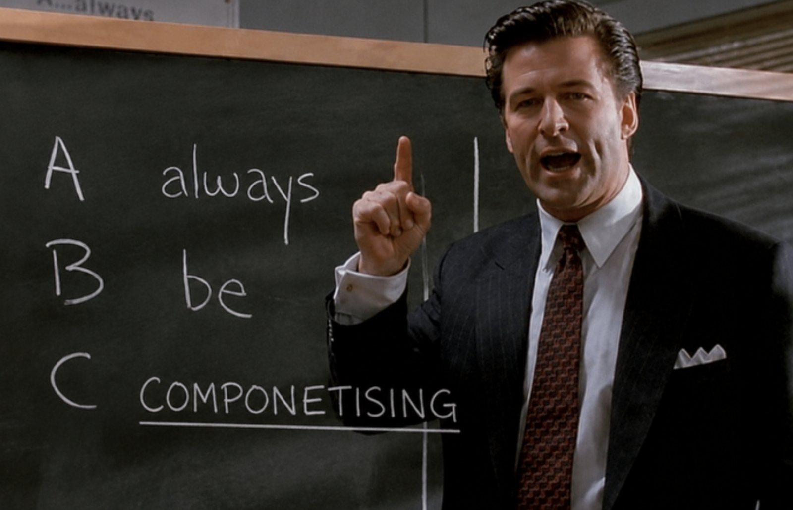

HH Design System

The native design system behind Heidi’s iOS apps, maintained by the Platform team.
Foundations
Tokens inspired by the web, purpose-built for native.
| Foundation | Contents | Source | Status |
|---|---|---|---|
| Primitives | 119 stops · 11 ramps | HHColorPrimitives.swift | In sync |
| Semantic colours | 37 tokens · light/dark pairs | HHColors.swift | In sync |
| Text | 13 app styles · 6 Markdown styles | HHTextStyle.swift | In sync |
| Spacing | 21 stops · 0–64pt | HHSpacing.swift | Out of sync |
| Radius | 9 radii · 4–36pt | HHRadius.swift | Out of sync |
| Sizing | 18 control, avatar and icon sizes | HHSpacing.swift | Out of sync |
| Shadows | 5 elevation styles | View+HeidiShadow.swift | Out of sync |
| Motion | 15 durations · 7 curves | no token — call sites | Out of sync |
| Icons | 57 Lucide glyphs in use | CustomIcons.swift | In sync |
Guiding principles
The beliefs behind how we work and what we build.
Quality over quantity
Every feature has a cost. Earn trust through depth, polish, and reliability — not feature count.
We build together
No handoff culture. Designers, engineers, and agents share ownership from idea to implementation. We are all builders.
Fix as you go
Plant deliberately. Prune relentlessly. Every change should make the system simpler, stronger, or more useful.
Design systems, not screens
Systems scale. Screens don’t. Design components, states, and flows that can be reused across the product.
Code is the source of truth
The product is the truth. Figma communicates intent, but the design system lives in production code.
Consistency creates trust
Every inconsistency compounds. Shared patterns and behaviors create products that feel reliable and trustworthy.
Familiar by design
Start with the platform. Custom UI should solve a real problem, not satisfy a preference.
No custom values
Every exception creates system debt. Use semantic tokens and shared foundations instead of one-off values.
Everything is a component
New patterns are a last resort. Reuse, refactor, or reject before creating something new.
